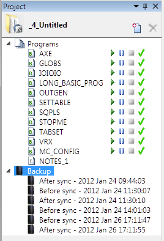

The project tree can be displayed when Motion Perfect is operating in "Sync Mode". It contains information about the current project Motion Perfect.

The tree consists of a header section and the tree body.
The tree header contains basic information about the project plus some important controls. The header contains a project icon, the project name, a "New Program" button and a "Delete Item" button.
Clicking on this button creates a new program in the project. (See " Creating a New Program ")
Clicking on this button deletes the currently selected program.
The body of the tree contains information in several expandable sections:
|
Section Name |
Contents |
|
Programs |
Programs and files stored in the project. |
|
Backup |
Automatically and manually created backups of the project. |
|
Settings |
User changeable settings of the project. |
This section duplicates the functionality of the " Programs " section in the " Controller Tree "
Every time Motion Perfect synchronizes with a project a backup of the project is made before and after the synchronization operation (the backup after is only made if synchronization has been successful). The tree contains a list of the backups currently stored on the PC.
The "Backups" item in the tree has a context menu as follows:
|
Entry |
Description |
|
Create Backup |
Create a backup of the current state of the project |
|
Delete All Backups |
Delete all the stored backups |
|
Manage |
Start the " Backup Manager " tool |
Each backup entry also has a context menu as follows:
|
Entry |
Description |
|
Revert to Selected Backup |
Reverts the project to the state saved in the selected backup |
|
Set Name |
Allows the user to give the backup a meaningful name |
|
Delete Backup |
Deletes the backup entry |